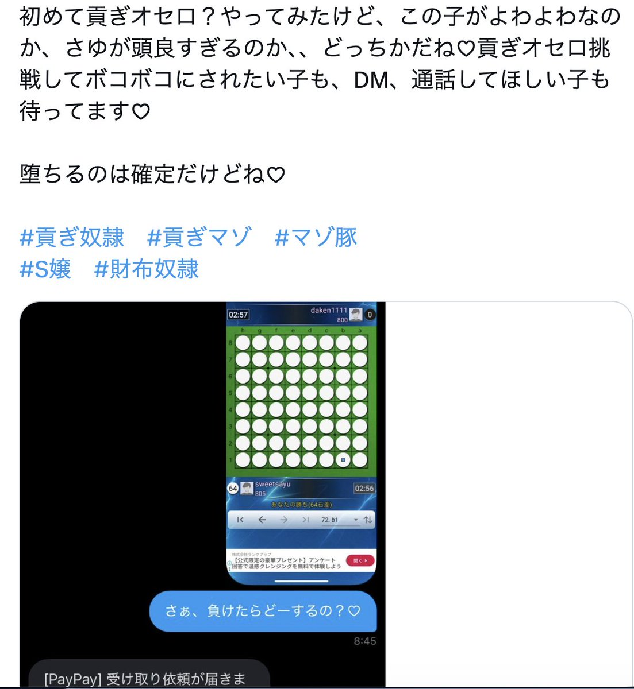
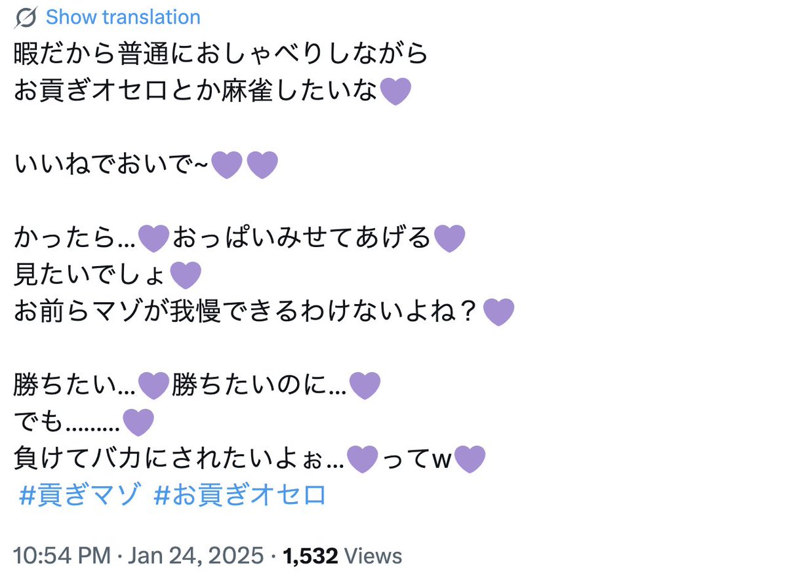

時璃風医詩🌈🏳️🌈
@hagishigure
我此时很想艾特一位在荷兰的跨女兼前国家级国际象棋选手和我下这个。


時璃風医詩🌈🏳️🌈
@hagishigure
我此时很想艾特一位在荷兰的跨女兼前国家级国际象棋选手和我下这个。 https://t.co/MQKwOOf5q3
kokomi💙
@yourming04
日文区贡系常见#tag科普2: #貢ぎオセロ 是指黑白棋。抖m最喜欢的败北感，正好在这项棋类游戏上最具有特征，和它比起来五子棋和象棋的败北感都拉完了（并且也很好学，玩一次就会）。规则是把对方的棋变成自己的颜色，最后直到双方都没法走下一步为结束 （详情如下）
#atm奴 #贡奴 https://t.co/GE816EUWYe